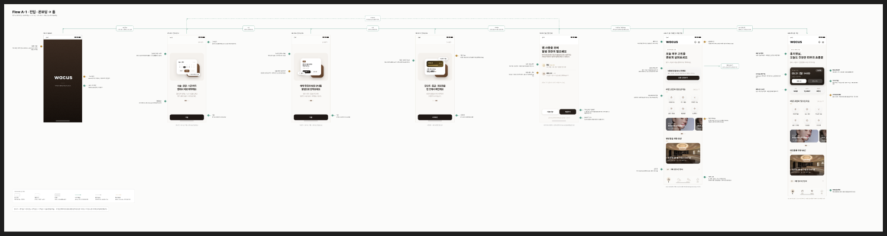
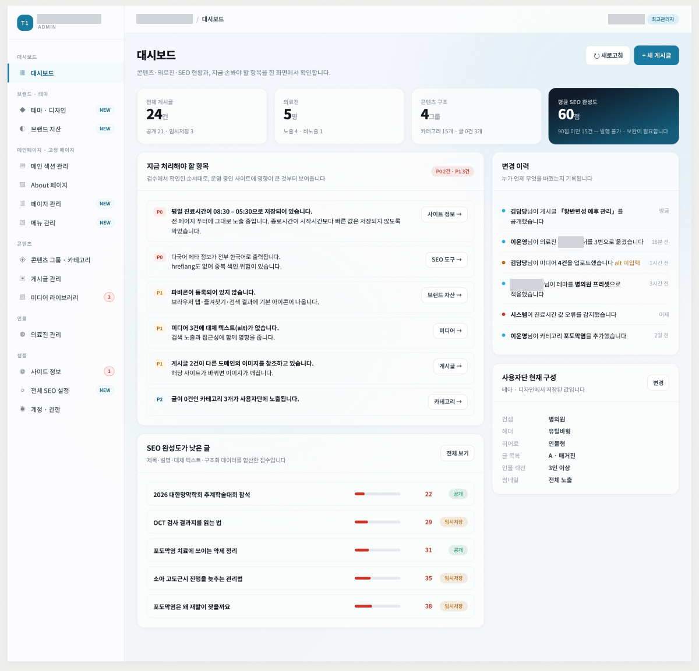
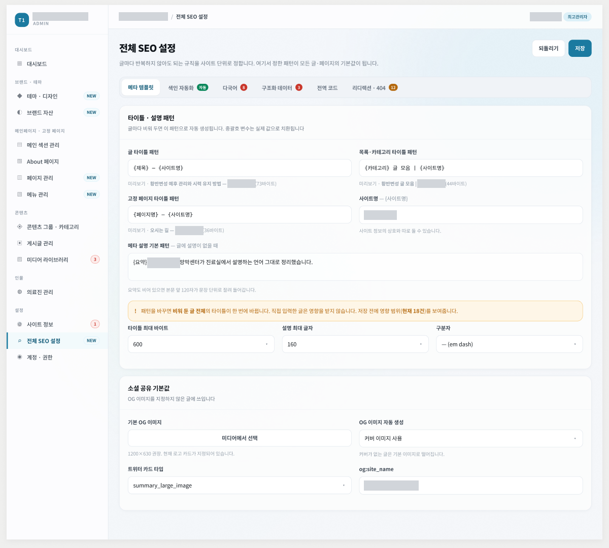

05 · 운영자·관리자 화면 · 기존 자료 기준
화면 간 연결과 표기 규칙을
개발 전달 단위로.
기존에 작업한 운영자 앱·관리자 화면의 Figma 증빙입니다. 아래 화면 수와 콜아웃 수는 그 자료 기준입니다.
01 / OVERVIEW
EXISTING FIGMA EVIDENCE · 기존 자료 기준요구사항을 Flow와 Wireframe으로
요구사항을 Flow와 Wireframe으로
개발 가능한 단위까지 구체화합니다.
50SCREENS
194CALLOUTS



Flow온보딩 → 권한 → 홈까지 화면 간 Action 연결
Policy확정·조건부·Modal·Back 등 표기 규칙 정의
Admin관리자 36 · 사용자단 9 · 신규 제안 5 화면
Handoff콜아웃과 화면 색인으로 개발 전달 범위 명확화
고객사 식별정보는 가린 상태입니다. 화면 수·콜아웃 수는 기존 Figma 자료 기준입니다.